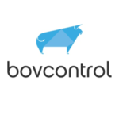
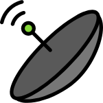

Publicado em 13 de março de 2018 por Estêvão Pegorin e Matheus Napolitano
Qual será o principal fator de alavancagem produtiva na agropecuária do futuro? Talvez seja difícil realizar tal projeção, até porque, atualmente as mudanças ocorrem em velocidade exponencial. Todavia, uma coisa é indubitável: Ferramentas tecnológicas, como: smartphones e computadores – estão cada vez mais presentes no setor como parte indissociável no dia-a-dia do agropecuarista. Diante dessa forte expansão, fica o questionamento: Quais serão as implicações produtivas da ampla conectividade tecnológica na pecuária?
Quando pensamos em tecnologia na criação de animais, logo associamos a ideia à Zootecnia de Precisão. Como explícito em seu nome, é um conceito que corresponde ao conjunto de técnicas e tecnologias que visam possibilitar maior precisão no manejo dos animais, nas análises das variáveis produtivas e, na tomada de decisão do produtor. Ela se aplica em diversos aspectos da produção, tais como: nutrição, manejo, sanidade e bem-estar do animal.
A expansão da Zootecnia de precisão, dentre vários fatores, deve-se à rápida expansão da utilização da internet no campo. Principalmente, através da utilização de smartphones, computadores e tablets. Segundo pesquisa realizada pela Associação Brasileira de Marketing Rural & Agronegócio (ABMR&A), que de cada 4 em 4 anos, entrevista agropecuaristas e famílias rurais em mais de 15 estados brasileiros, constatou-se, na edição de 2013, que 17% dos entrevistados possuíam smartphones; Já na edição de 2017, 59% alegaram possuir o aparelho. Ou seja, ocorreu um aumento de mais de 300% em apenas 4 anos.
A expansão da internet e aumento da conectividade das coisas é fundamental para o desenvolvimento da Zootecnia de Precisão. Sendo que, é através da internet, que muitas das ferramentas atuam, como por exemplo, as startups do agronegócio (AgTechs). As AgTechs são empresas com base tecnológica, que desenvolvem soluções voltadas ao agronegócio, visando possibilitar ao produtor, maior eficácia produtiva.
Veja alguns exemplos dessas empresas:
bovcontrol: Ferramenta de coleta e análise de dados para melhorar performance da produção de carne, leite ou genética.

Speclab: Realiza análise de solo inovadora, que em cerca de 30 segundo faz a análise dos nutrientes ali presentes.
AEGRO: Sistema de gestão de produção agrícola que visa possibilitar ao produtor atingir a máxima eficiência produtiva em sua atividade.
Além disso, o acesso a internet possibilita que o produtor tenha acesso em tempo real à cotações de mercado para compra de insumos e, venda de seus produtos; comunicação rápida com seus funcionários e parceiros comerciais; realização de operações bancárias; acesso à conhecimento, como: sanar dúvidas em bulas de remédios e técnicas de manejo, entre diversas outras vantagens.
Apoiado nessas novas ferramentas tecnológicas, o produtor pode obter análises mais precisas, e, a partir disso, realizar decisões mais assertivas. Consequentemente, melhores decisões acarretarão em maior eficácia produtiva.
Diante de tantos recursos, que requisitam acesso a internet, pode surgir o questionamento: “Nem tudo são flores, pois esses recursos dependem de acesso a internet, e, grande parte das zonas agricultáveis ainda não possui essa conectividade”. Sim, isso é um enorme entrave, e AINDA o acesso à rede é limitado.

Para que a internet chegue em locais que ainda não tem acesso à rede, uma ferramenta aparenta ser a ideal: A internet via satélite. Essa é a única que chega em locais, nos quais, outros meios de transmissão de sinal, como: DSL, cabo e 3g não chegam. Muitos agropecuaristas já utilizam esse tipo de acesso e se mostram satisfeitos.
Aliada à internet via satélite, outra notícia que nos deixam esperançosos é o “Plano Nacional de Internet da Coisas”, lançado pelo governo federal no final de 2017. A Internet das coisas (IoT, sigla em inglês), basicamente é a conexão entre coisas e aparelhos. No campo, suas aplicações possibilitam maior eficácia nos processos de gestão e produção. Estima-se, que a implementação do plano da IoT, gerará, até 2025, um impacto na agricultura de até 21 bilhões de reais.
Ou seja, o aumento da conectividade no campo, e da expansão da internet na produção, aparenta ser somente questão de tempo.
Sabemos também que essa “conectividade” não é a solução para tudo. Aliás, muitas produções brasileiras, infelizmente, ainda não conseguem nem realizar o básico bem feito. Como dito por João Rosa, professor da USP/ESALQ, em artigo postado no portal Next: “Ainda possuímos muitas ferraris em estrada de terra, com motoristas sem habilitação”. Isso é fato. Todavia, com o auxílio da tecnologia e o interesse dos produtores em alavancar sua produção é possível que se adequem as estradas e aprendam a dirigir a ferrari, e muito provavelmente chegarão na frente dos carros convencionais.
Referências:
ABMRA. 6° Onda da pesquisa perfil comportamental e hábitos de mídia do produtor rural brasileiro. Disponível em:<Clique Aqui>. Acesso em: Fevereiro de 2018.
ABMRA. 7° Pesquisa hábitos do produtor rural ABMRA. Disponível em:<Clique Aqui>. Acesso em: Fevereiro de 2018.
ABMRA. Internet das coisas pode ajudar a melhorar produtividade agrícola. Disponível em: <Clique Aqui>. Acesso em: Fevereiro de 2018.
BovControl. Disponível em<Clique Aqui> Acesso em: Fevereiro de 2018.
Canal Rural. Acesso à internet por meio de celular cresce no campo. Disponível em:<Clique Aqui>. Acesso em: Fevereiro de 2018
CPT. Zootecnia de precisão – Você sabe o que é? Disponível em: <Clique Aqui>. Acesso em: Fevereiro de 2018
Elsys blog. Internet no campo. O agronegócio está cada vez mais digital. Disponivel em: <Clique Aqui>. Acesso em: Fevereiro de 2018.
Globo. Fazenda inteligente e ‘Uber do campo’: startups apresentam soluções para desafios da lavoura. Disponível em:<Clique Aqui>. Acesso em: Fevereiro de 2018.
Globo. Nem quem mora no campo quer ficar sem conexão. Disponível em:<Clique Aqui>. Acesso em: Fevereiro de 2018.
Portal Next. Agricultura digital: Ferrari em estrada de terra e com piloto sem habilitação. Disponível em: <Clique Aqui> Acesso em: Fevereiro de 2018.